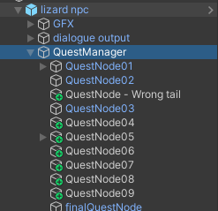
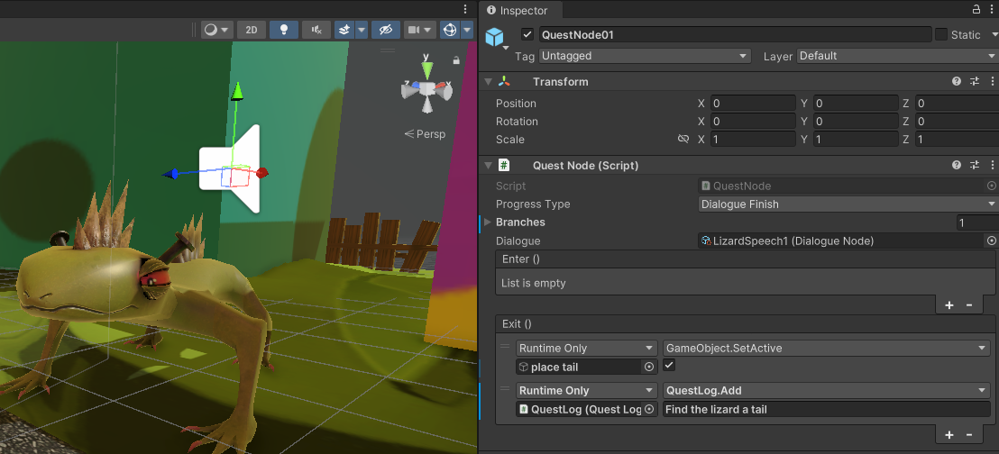
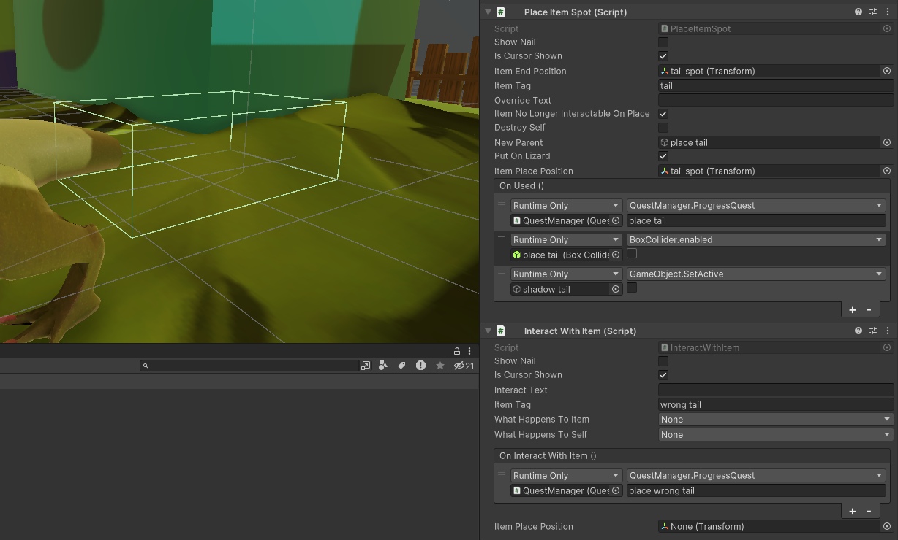
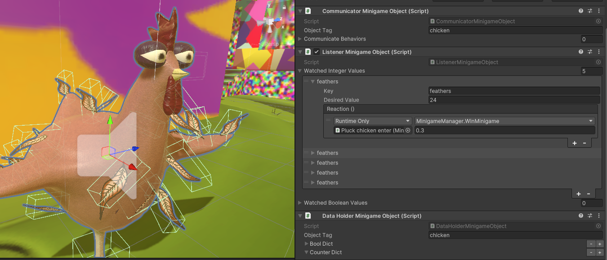
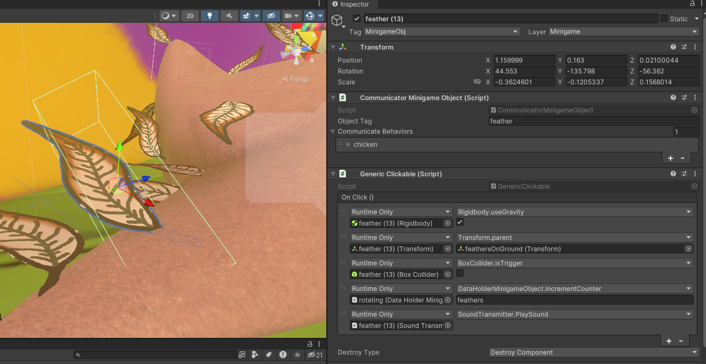

- Dialogue and quest building tools for designers
- Modular minigame system to create minigames without code
- Programmed basic gameplay features
- Implemented quests and minigames
Quest Building Tools
The gameplay of Typical Trip involves a large number of small interactions. As a result. one of my goals for this project was to create tools to streamline the creation process of gameplay content.
The dev vision for quest creation was to be able to script out quests entirely within a scene without the need for creating a custom script for each quest. The system would provide an overarching manager script and small logic block components with conditions for progressing to the next step in a quest.
Each quest would have a root object with a Quest Manager script that holds a list of Quest Nodes. With just this basic structure each Quest Node can then be responsible for handling its own progression. Quest Nodes may progress from dialogue, completing a minigame, or by giving a particular item to a character.

Quest Manager with nodes

Node with Quest Information and Clear Condition

Progress Quest by interacting with an object
Modular Minigame System
I wanted to create tools for the project's designers to be able to create bespoke minigames within the scene itself without needing to create custom scripts. Minigames would be constructed from provided components that perform basic functionality like invoke events when clicked or collided with, these components could then communicate with another object specially designed to hold variables for that minigame. The underlying logic of each minigame would be based on incrementing/decrementing integers and invoking events when those integers reached particular thresholds.
Each minigame is initiated by interacting with the minigame object, the camera than changes to a unique camera for that minigame, and the player input is changed to a cursor. I created a few basic cursor interaction objects such as clickable and draggable objects which all minigames could then derive from.

Minigame manager tracks variables and clear condition

Minigame object communicates for manager